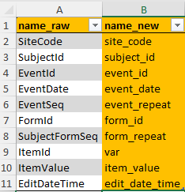

A metadata file needs to be customized and created for each study.
Use the function create_clinsight_metadata() to create and
open a new template. The Excel template contains multiple tabs which are
described below in detail. The orange tabs are mandatory and should not
be removed or renamed.

column_names
Within the first tab, the column names of the raw data need to be
specified. The columns with the names within name_raw will
be renamed to the new name when merging metadata with raw data later.
Again, orange fields should not be adjusted.

events
Next tab contains information about study events.

All study visits should be entered in the event_id
column, in order to preserve the correct order of events.
The green-colored column names are optional columns.
is_regular_visit can be used to mark a specific visit as
non-regular/ not planned. Unplanned visits will not show up in the
compact timeline and will not be used to increment an internal visit
counter for each patient.
If needed, the name of the event_id can be customized
using two columns. event_label_custom changes the event
label within the compact timeline in the top right corner of the
application. event_name_custom will change the standard
event_id label anywhere else in the application.
Lastly, ClinSight needs to know which is the baseline event to create
internal counters of how many days are passed since baseline. It assumes
that the first visit in the list (which is SCR in the
example) is the baseline visit, but this can be changed using the
is_baseline_event column. Note that only one event can be
set as baseline here.
If the number of events cannot be specified correctly beforehand, a
user can also provide an event_id_pattern matching to
create event labels and event names.
common_forms
This tab contains information about the variables that need to be
displayed in the Common events tab in
ClinSight. Together with study_forms and
general, this tab contains most of the data that will be
shown in the app.
The column var contains the exact name of the variable
in the raw data. The item_name column contains the name of
the variable that will appear in the application. For common forms,
there are some prefixes that will be stripped from the
item_name so that a unique name for each variable can be
provided: (AE for Adverse Events
CM for (Concomitant) Medication, and
MH for Medical History). The
item_group column contains name of the form in which the
item will show up in the application. Lastly, item_type can
either be continuous or other, and it controls whether visualization or
only tables will be displayed. This should usually be set to
other within study_forms. More information on the other
implemented options follows in the description for the
study_forms below.

Note that some of the item_names are colored orange,
meaning that ClinSight expect these names to be present. Currently it is
not recommended to change these names. If they are missing in your own
data, just leave them in the metadata as is. It will be made easier to
customize these names and variables in a future update.
study_forms
This tab contains information about the variables in the
Study data tab in ClinSight. Mandatory columns are here
var, item_name, item_type, and
item_group.
Data and forms/item_groups entered in the study_forms
tab will either show up in table form or, if all variables within an
item_group are of item_type ‘continuous’, in
interactive graphs. If all data is ‘continuous’, units and limits can be
provided directly if these do not change within each site.
Scale continuous values
If limits are provided in the data, and especially if they can vary per study site, then there is an option within ClinSight to scale the values for each variable to a value between 0 and 1, with 0 being the lower limit and 1 being the upper limit of the normal range, based on the normal ranges of the local laboratory. This way, the values of a patient can be compared with all available data, even if other data was provided with other laboratory data and units. The formula used for scaling is shown below:
( is the lower limit of x and the upper limit, according to the site-specific laboratory ranges).
In order to use this functionality, first the value
item_scale in the tab form_level_data should be set to
TRUE and use_unscaled_limits to
FALSE, so that it is clear for the application that values
need to be scaled.
Then, additional data per variable needs to be provided. As an
example, we will highlight the settings for the ‘Sodium’ variable in the
package data. Multiple variables and values should be provided, with a
consistent base name that identifies that variable in question (in this
case LBSER_SODIUM, which corresponds to the
Sodium item_name, and a varying
suffix. For Sodium, the following variables
can or will be used by ClinSight and should be available in the data in
a long format, in the var column:
-
LBSER_SODIUM_LBORRES: The actual (raw) value belonging to this variable. -
LBSER_SODIUM_LBORNR_Lower: The lower limit of the normal range. -
LBSER_SODIUM_LBORNR_Upper: The upper limit of the normal range. -
LBSER_SODIUM_LBORRESU: The unit belonging to the variable -
LBSER_SODIUM_LBORRESUOTH: (Optional): If no standard unit is provided, but the site enters the unit manually, in some EDCs this input is in a separate row in the data. If provided here, this value will be used as unit if unit information inLBSER_SODIUM_LBORRESUis missing. -
LBSER_SODIUM_LBCLSIG: (Optional): Whether the value was flagged as clinically significant (CS) or not clinically significant (NCS). -
LBSER_SODIUM_LBREASND: (Optional): reason provided by the site why a variable was not measured.
To keep the metadata compact, the variables can also be provided by
only stating the base name LBSER_SODIUM in the
var column, and specifying the suffixes in the
suffix column (see screenshot above).
ClinSight will automatically expand the base name with all
suffixes provided when reading metadata with
get_metadata().
Important note: while the base name is flexible, the suffix names are not. It is easiest to keep the suffixes as stated above, since that is the format that ClinSight expects:
LBORRES,LBORNR_Lower,LBORNR_Upper,LBORRESU,LBORRESUOTH,LBCLSIG, andLBREASND. If thesuffixnames differ in the raw data, you can provide the actual names in the metadata tab, and then provide a custom function in thesettingstab (see below) which renames the variables to the ones mentioned.
general
This tab contains information about variables that are needed in
ClinSight, but do not necessarily need to be displayed in the
Common events or Study data tab. Of note that
here are also a view mandatory names that are still needed for ClinSight
to function. It is not advised to delete these names. If they are
missing in your own data, just leave them in the metadata as is.
form_level_data
This is an optional tab. If provided, the column
item_group is mandatory. In this tab, settings can be
adjusted on form level rather than setting them within the
common_forms or study_forms tab.
If a form is missing here, or one of the values
item_scale, use_unscaled_limits, or
review_required is not provided, then the defaults will be
used for that form:
| item_scale | use_unscaled_limits | review_required |
|---|---|---|
NA |
NA |
TRUE |
use_unscaled_limits is a logical, which can be used to
control whether the limits of a continuous variable should be shown in
raw format. Not that setting this to TRUE will show all limits in the
data. This can be done if only one upper and lower limit is available
per variable in the data. See study_forms for more information.
item_scale can be used to control whether laboratory
values should be scaled so that they can be compared even if the units
and limits per study site differ. See study_forms for more information.
review_required: if FALSE, the variables in that form
will not show up as needed to review, and a review for that form cannot
be saved. Useful if the form provides background information that does
not require extensive review by the medical monitor.
table_names
Can be used to get nicer names in the interactive tables in ClinSight. Current table contains mostly standard ClinSight names, but also other variable names could be included here.

settings
The settings tab contains several options customizing
ClinSight data. Currently, the following settings are
available:
- Settings for adjusting and customizing study data when merging with
metadata using [merge_meta_with_data()], by using custom functions in
the process. If a custom function name is added here, the function will
run at the described moment of the merging process (before or after
merging or data pivoting):
pre_merge_fnspre_pivot_fnspost_pivot_fnspost_merge_fns
- Other (misc.) settings:
-
treatment_labelto set the label for the treatments in the interactive timeline. Defaults to ‚Äúüíä T‚Çì‚Äù.
-